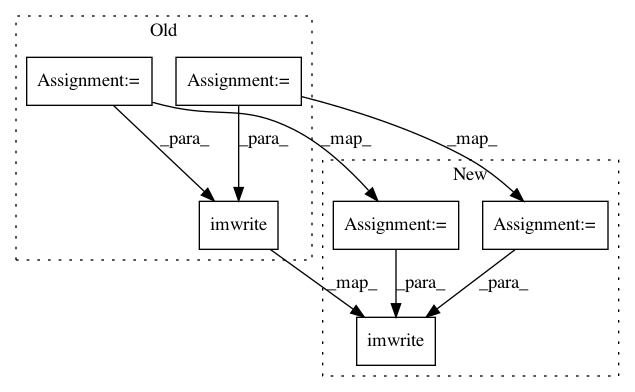

f4451e5ea9a45c457e8520724206a9ad3b0d20f2,torchreid/utils/reidtools.py,,visualize_ranked_results,#Any#Any#Any#Any#Any#Any#Any#,23
Before Change
for q_idx in range(num_q):
qimg_path, qpid, qcamid = query[q_idx]
num_cols = topk + 1
grid_img = 255 * np.ones((height, num_cols*width+topk*GRID_SPACING+QUERY_EXTRA_SPACING, 3), dtype=np.uint8)
qimg_path_name = qimg_path[0] if isinstance(qimg_path, tuple) or isinstance(qimg_path, list) else qimg_path
if data_type == "image":
qimg = cv2.imread(qimg_path)
qimg = cv2.resize(qimg, (width, height))
qimg = cv2.copyMakeBorder(qimg, BW, BW, BW, BW, cv2.BORDER_CONSTANT, value=(0, 0, 0))
qimg = cv2.resize(qimg, (width, height)) // resize twice to ensure that the border width is consistent across images
grid_img[:, :width, :] = qimg
else:
qdir = osp.join(save_dir, osp.basename(osp.splitext(qimg_path_name)[0]))
mkdir_if_missing(qdir)
_cp_img_to(qimg_path, qdir, rank=0, prefix="query")
rank_idx = 1
for g_idx in indices[q_idx,:]:
gimg_path, gpid, gcamid = gallery[g_idx]
invalid = (qpid == gpid) & (qcamid == gcamid)
if not invalid:
matched = gpid==qpid
if data_type == "image":
border_color = GREEN if matched else RED
gimg = cv2.imread(gimg_path)
gimg = cv2.resize(gimg, (width, height))
gimg = cv2.copyMakeBorder(gimg, BW, BW, BW, BW, cv2.BORDER_CONSTANT, value=border_color)
gimg = cv2.resize(gimg, (width, height))
start = rank_idx*width + rank_idx*GRID_SPACING + QUERY_EXTRA_SPACING
end = (rank_idx+1)*width + rank_idx*GRID_SPACING + QUERY_EXTRA_SPACING
grid_img[:, start: end, :] = gimg
else:
_cp_img_to(gimg_path, qdir, rank=rank_idx, prefix="gallery", matched=matched)
rank_idx += 1
if rank_idx > topk:
break
imname = osp.basename(osp.splitext(qimg_path_name)[0])
cv2.imwrite(osp.join(save_dir, imname+".jpg"), grid_img)
if (q_idx+1) % 100 == 0:
print("- done {}/{}".format(q_idx+1, num_q))
After Change
qimg = cv2.copyMakeBorder(qimg, BW, BW, BW, BW, cv2.BORDER_CONSTANT, value=(0, 0, 0))
// resize twice to ensure that the border width is consistent across images
qimg = cv2.resize(qimg, (width, height))
num_cols = topk + 1
grid_img = 255 * np.ones((height, num_cols*width+topk*GRID_SPACING+QUERY_EXTRA_SPACING, 3), dtype=np.uint8)
grid_img[:, :width, :] = qimg
else:
qdir = osp.join(save_dir, osp.basename(osp.splitext(qimg_path_name)[0]))
mkdir_if_missing(qdir)
_cp_img_to(qimg_path, qdir, rank=0, prefix="query")
rank_idx = 1
for g_idx in indices[q_idx,:]:
gimg_path, gpid, gcamid = gallery[g_idx]
invalid = (qpid == gpid) & (qcamid == gcamid)
if not invalid:
matched = gpid==qpid
if data_type == "image":
border_color = GREEN if matched else RED
gimg = cv2.imread(gimg_path)
gimg = cv2.resize(gimg, (width, height))
gimg = cv2.copyMakeBorder(gimg, BW, BW, BW, BW, cv2.BORDER_CONSTANT, value=border_color)
gimg = cv2.resize(gimg, (width, height))
start = rank_idx*width + rank_idx*GRID_SPACING + QUERY_EXTRA_SPACING
end = (rank_idx+1)*width + rank_idx*GRID_SPACING + QUERY_EXTRA_SPACING
grid_img[:, start: end, :] = gimg
else:
_cp_img_to(gimg_path, qdir, rank=rank_idx, prefix="gallery", matched=matched)
rank_idx += 1
if rank_idx > topk:
break
if data_type == "image":
imname = osp.basename(osp.splitext(qimg_path_name)[0])
cv2.imwrite(osp.join(save_dir, imname+".jpg"), grid_img)
if (q_idx+1) % 100 == 0:
print("- done {}/{}".format(q_idx+1, num_q))
In pattern: SUPERPATTERN
Frequency: 3
Non-data size: 6
Instances
Project Name: KaiyangZhou/deep-person-reid
Commit Name: f4451e5ea9a45c457e8520724206a9ad3b0d20f2
Time: 2019-08-23
Author: k.zhou@qmul.ac.uk
File Name: torchreid/utils/reidtools.py
Class Name:
Method Name: visualize_ranked_results
Project Name: thoughtworksarts/EmoPy
Commit Name: 2c4db5b8def6e4f6f0666d1d559a531357c7c347
Time: 2017-12-19
Author: sweber@thoughtworks.com
File Name: data/imageWrapper.py
Class Name: ImageWrapper
Method Name: flip
Project Name: thoughtworksarts/EmoPy
Commit Name: 2c4db5b8def6e4f6f0666d1d559a531357c7c347
Time: 2017-12-19
Author: sweber@thoughtworks.com
File Name: data/imageWrapper.py
Class Name: ImageWrapper
Method Name: add_noise